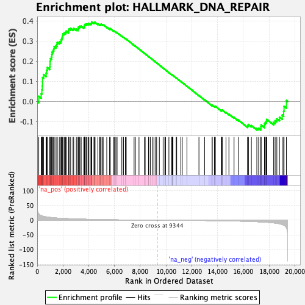
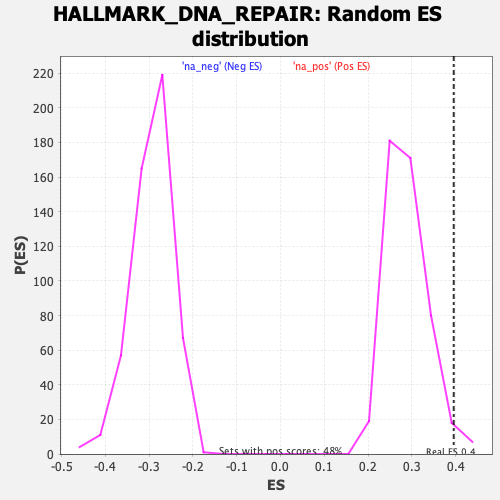

| | | Dataset | DE_genes |
| Phenotype | NoPhenotypeAvailable |
| Upregulated in class | na_pos |
| GeneSet | HALLMARK_DNA_REPAIR |
| Enrichment Score (ES) | 0.39559862 |
| Normalized Enrichment Score (NES) | 1.3710986 |
| Nominal p-value | 0.021008404 |
| FDR q-value | 0.0806965 |
| FWER p-Value | 0.494 |
Table: GSEA Results Summary

Fig 1: Enrichment plot: HALLMARK_DNA_REPAIR
Profile of the Running ES Score & Positions of GeneSet Members on the Rank Ordered List
| SYMBOL | RANK IN GENE LIST | RANK METRIC SCORE | RUNNING ES | CORE ENRICHMENT | | 1 | SNAPC4 | 121 | 21.417 | 0.0255 | Yes |
| 2 | GTF3C5 | 311 | 15.671 | 0.0390 | Yes |
| 3 | TP53 | 363 | 14.770 | 0.0583 | Yes |
| 4 | NFX1 | 395 | 14.305 | 0.0779 | Yes |
| 5 | NELFB | 410 | 14.094 | 0.0981 | Yes |
| 6 | UPF3B | 413 | 14.007 | 0.1188 | Yes |
| 7 | POLR2D | 495 | 13.009 | 0.1339 | Yes |
| 8 | POLR1C | 692 | 11.359 | 0.1406 | Yes |
| 9 | POLD1 | 733 | 11.005 | 0.1549 | Yes |
| 10 | POLD3 | 777 | 10.766 | 0.1687 | Yes |
| 11 | ALYREF | 976 | 9.641 | 0.1727 | Yes |
| 12 | RPA2 | 996 | 9.524 | 0.1859 | Yes |
| 13 | POLR3C | 999 | 9.504 | 0.1999 | Yes |
| 14 | SF3A3 | 1022 | 9.398 | 0.2127 | Yes |
| 15 | AK1 | 1106 | 8.930 | 0.2216 | Yes |
| 16 | ADRM1 | 1136 | 8.790 | 0.2332 | Yes |
| 17 | SURF1 | 1155 | 8.717 | 0.2452 | Yes |
| 18 | RFC5 | 1235 | 8.346 | 0.2535 | Yes |
| 19 | NUDT9 | 1293 | 8.144 | 0.2626 | Yes |
| 20 | TAF9 | 1319 | 8.043 | 0.2733 | Yes |
| 21 | RALA | 1457 | 7.596 | 0.2775 | Yes |
| 22 | EDF1 | 1531 | 7.340 | 0.2846 | Yes |
| 23 | UMPS | 1554 | 7.264 | 0.2942 | Yes |
| 24 | RFC3 | 1714 | 6.817 | 0.2961 | Yes |
| 25 | SAC3D1 | 1838 | 6.471 | 0.2993 | Yes |
| 26 | RFC2 | 1859 | 6.418 | 0.3078 | Yes |
| 27 | ERCC3 | 1910 | 6.287 | 0.3146 | Yes |
| 28 | MPC2 | 1945 | 6.215 | 0.3220 | Yes |
| 29 | REV3L | 1982 | 6.130 | 0.3293 | Yes |
| 30 | POLR2A | 2004 | 6.080 | 0.3372 | Yes |
| 31 | ITPA | 2109 | 5.855 | 0.3405 | Yes |
| 32 | NME1 | 2202 | 5.631 | 0.3441 | Yes |
| 33 | POLR2E | 2253 | 5.535 | 0.3497 | Yes |
| 34 | GTF2H3 | 2434 | 5.194 | 0.3481 | Yes |
| 35 | POLA1 | 2442 | 5.181 | 0.3554 | Yes |
| 36 | GTF2H1 | 2474 | 5.119 | 0.3614 | Yes |
| 37 | RAD51 | 2595 | 4.903 | 0.3625 | Yes |
| 38 | POLR2I | 2778 | 4.558 | 0.3598 | Yes |
| 39 | RAE1 | 2832 | 4.482 | 0.3637 | Yes |
| 40 | TAF13 | 3040 | 4.155 | 0.3592 | Yes |
| 41 | RFC4 | 3172 | 3.955 | 0.3583 | Yes |
| 42 | GTF2A2 | 3184 | 3.941 | 0.3636 | Yes |
| 43 | TAF6 | 3188 | 3.931 | 0.3692 | Yes |
| 44 | DGCR8 | 3279 | 3.794 | 0.3702 | Yes |
| 45 | CLP1 | 3312 | 3.752 | 0.3741 | Yes |
| 46 | POLB | 3414 | 3.622 | 0.3743 | Yes |
| 47 | SUPT5H | 3615 | 3.385 | 0.3689 | Yes |
| 48 | LIG1 | 3672 | 3.320 | 0.3709 | Yes |
| 49 | ERCC8 | 3682 | 3.313 | 0.3754 | Yes |
| 50 | ELOA | 3686 | 3.304 | 0.3801 | Yes |
| 51 | POLR2F | 3713 | 3.266 | 0.3836 | Yes |
| 52 | GTF2H5 | 3798 | 3.175 | 0.3840 | Yes |
| 53 | RPA3 | 3866 | 3.088 | 0.3851 | Yes |
| 54 | PRIM1 | 3965 | 2.972 | 0.3845 | Yes |
| 55 | TYMS | 3990 | 2.951 | 0.3876 | Yes |
| 56 | POLE4 | 4103 | 2.812 | 0.3860 | Yes |
| 57 | POM121 | 4180 | 2.721 | 0.3861 | Yes |
| 58 | GTF2F1 | 4203 | 2.688 | 0.3889 | Yes |
| 59 | SDCBP | 4221 | 2.673 | 0.3920 | Yes |
| 60 | SSRP1 | 4229 | 2.668 | 0.3956 | Yes |
| 61 | DUT | 4405 | 2.485 | 0.3902 | No |
| 62 | TARBP2 | 4437 | 2.445 | 0.3922 | No |
| 63 | ERCC2 | 4491 | 2.394 | 0.3930 | No |
| 64 | POLH | 4710 | 2.185 | 0.3850 | No |
| 65 | BCAP31 | 4834 | 2.077 | 0.3817 | No |
| 66 | POLR2G | 4880 | 2.031 | 0.3824 | No |
| 67 | PNP | 4940 | 1.983 | 0.3823 | No |
| 68 | SNAPC5 | 4957 | 1.965 | 0.3844 | No |
| 69 | CCNO | 5061 | 1.888 | 0.3818 | No |
| 70 | PDE4B | 5120 | 1.843 | 0.3816 | No |
| 71 | HPRT1 | 5399 | 1.617 | 0.3695 | No |
| 72 | SUPT4H1 | 5625 | 1.456 | 0.3600 | No |
| 73 | POLR2H | 5638 | 1.450 | 0.3616 | No |
| 74 | CSTF3 | 5668 | 1.423 | 0.3622 | No |
| 75 | SRSF6 | 5924 | 1.279 | 0.3509 | No |
| 76 | NELFE | 5986 | 1.245 | 0.3496 | No |
| 77 | GSDME | 6105 | 1.172 | 0.3452 | No |
| 78 | BRF2 | 6201 | 1.120 | 0.3419 | No |
| 79 | GTF2B | 6570 | 0.903 | 0.3242 | No |
| 80 | CMPK2 | 6697 | 0.835 | 0.3189 | No |
| 81 | RBX1 | 6842 | 0.764 | 0.3126 | No |
| 82 | POLR2J | 6910 | 0.730 | 0.3102 | No |
| 83 | DCTN4 | 7521 | 0.476 | 0.2793 | No |
| 84 | POLR2K | 7624 | 0.438 | 0.2746 | No |
| 85 | XPC | 7902 | 0.346 | 0.2608 | No |
| 86 | APRT | 8328 | 0.223 | 0.2391 | No |
| 87 | NELFCD | 8382 | 0.207 | 0.2367 | No |
| 88 | NCBP2 | 8640 | 0.149 | 0.2236 | No |
| 89 | DAD1 | 8657 | 0.143 | 0.2229 | No |
| 90 | TAF1C | 8780 | 0.112 | 0.2168 | No |
| 91 | ARL6IP1 | 8940 | 0.077 | 0.2087 | No |
| 92 | EIF1B | 9060 | 0.053 | 0.2026 | No |
| 93 | DDB1 | 9192 | 0.029 | 0.1958 | No |
| 94 | IMPDH2 | 9271 | 0.015 | 0.1918 | No |
| 95 | USP11 | 9482 | -0.024 | 0.1810 | No |
| 96 | BOLA2 | 9775 | -0.072 | 0.1659 | No |
| 97 | SMAD5 | 9910 | -0.104 | 0.1591 | No |
| 98 | AAAS | 9965 | -0.118 | 0.1565 | No |
| 99 | ADA | 10224 | -0.181 | 0.1434 | No |
| 100 | RRM2B | 10434 | -0.235 | 0.1329 | No |
| 101 | DDB2 | 10480 | -0.246 | 0.1310 | No |
| 102 | NT5C3A | 10497 | -0.249 | 0.1305 | No |
| 103 | ZNF707 | 10522 | -0.254 | 0.1296 | No |
| 104 | TAF12 | 10539 | -0.258 | 0.1292 | No |
| 105 | CETN2 | 10790 | -0.322 | 0.1167 | No |
| 106 | STX3 | 10828 | -0.333 | 0.1153 | No |
| 107 | VPS37B | 11153 | -0.433 | 0.0991 | No |
| 108 | COX17 | 11259 | -0.461 | 0.0944 | No |
| 109 | NPR2 | 11625 | -0.578 | 0.0763 | No |
| 110 | RAD52 | 12556 | -0.916 | 0.0295 | No |
| 111 | POLR1D | 12993 | -1.096 | 0.0085 | No |
| 112 | ADCY6 | 13575 | -1.400 | -0.0195 | No |
| 113 | TAF10 | 13586 | -1.406 | -0.0180 | No |
| 114 | TSG101 | 13753 | -1.508 | -0.0243 | No |
| 115 | GUK1 | 13809 | -1.540 | -0.0249 | No |
| 116 | TMED2 | 13823 | -1.552 | -0.0233 | No |
| 117 | MRPL40 | 14295 | -1.878 | -0.0449 | No |
| 118 | GPX4 | 14322 | -1.898 | -0.0434 | No |
| 119 | SEC61A1 | 14380 | -1.949 | -0.0435 | No |
| 120 | CANT1 | 14656 | -2.160 | -0.0545 | No |
| 121 | ELL | 14883 | -2.347 | -0.0627 | No |
| 122 | RNMT | 15281 | -2.713 | -0.0793 | No |
| 123 | NUDT21 | 15624 | -3.091 | -0.0924 | No |
| 124 | VPS28 | 16336 | -3.987 | -0.1234 | No |
| 125 | DGUOK | 16354 | -4.010 | -0.1183 | No |
| 126 | HCLS1 | 16399 | -4.085 | -0.1145 | No |
| 127 | POLL | 16626 | -4.439 | -0.1196 | No |
| 128 | AK3 | 17050 | -5.187 | -0.1338 | No |
| 129 | GMPR2 | 17190 | -5.468 | -0.1329 | No |
| 130 | NT5C | 17362 | -5.864 | -0.1331 | No |
| 131 | NME3 | 17365 | -5.874 | -0.1245 | No |
| 132 | TK2 | 17381 | -5.907 | -0.1165 | No |
| 133 | POLR1H | 17642 | -6.516 | -0.1203 | No |
| 134 | POLR2C | 17650 | -6.533 | -0.1109 | No |
| 135 | POLR3GL | 17710 | -6.699 | -0.1041 | No |
| 136 | NME4 | 17785 | -6.905 | -0.0976 | No |
| 137 | CDA | 17822 | -7.049 | -0.0890 | No |
| 138 | ERCC4 | 18357 | -9.228 | -0.1030 | No |
| 139 | BCAM | 18471 | -9.791 | -0.0943 | No |
| 140 | POLD4 | 18603 | -10.494 | -0.0855 | No |
| 141 | ERCC5 | 18806 | -12.105 | -0.0780 | No |
| 142 | MPG | 19018 | -14.637 | -0.0672 | No |
| 143 | VPS37D | 19132 | -16.749 | -0.0482 | No |
| 144 | AGO4 | 19162 | -17.578 | -0.0236 | No |
| 145 | ERCC1 | 19347 | -25.516 | 0.0047 | No |
Table: GSEA details [plain text format]

Fig 2: HALLMARK_DNA_REPAIR: Random ES distribution
Gene set null distribution of ES for HALLMARK_DNA_REPAIR